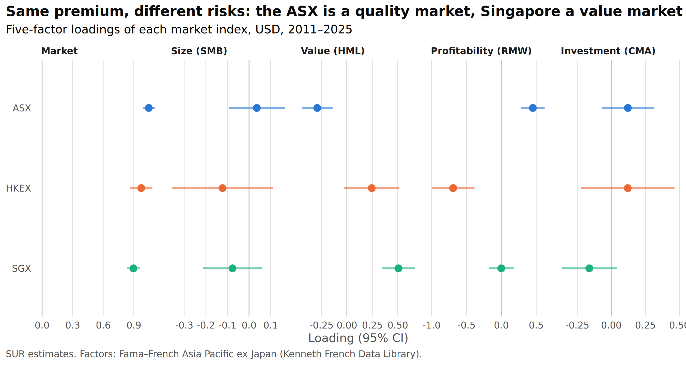

Structural breaks: sup-F test and Bai–Perron dating of each market’s regional beta
brk <-map(mk, function(m) { df <-data.frame(y = R[, m], x = w$MKT) fs <-Fstats(y ~ x, data = df, from =0.15) st <-sctest(fs, type ="supF") bp <-breakpoints(y ~ x, data = df, h =0.15) idx <- bp$breakpoints[!is.na(bp$breakpoints)] seg <-if (length(idx)) coef(bp) elsematrix(coef(lm(y ~ x, df)), 1, dimnames =list(NULL, c("(Intercept)", "x")))list(market = m, supF =unname(st$statistic), p = st$p.value, idx = idx,dates = months[idx], seg_beta = seg[, "x"])}) |>set_names(mk)n_break_mkts <-sum(map_lgl(brk, \(b) length(b$idx) >0))sg <- brk$SGXstopifnot(length(sg$idx) ==1, length(brk$ASX$idx) ==0, length(brk$HKEX$idx) ==0) # text assumes this pattern# Rolling 36-month correlations between the marketsroll_cor <-map_dfr(36:T_, function(k) { i <- (k -35):ktibble(month = months[k],`ASX–HKEX`=cor(R[i, "ASX"], R[i, "HKEX"]),`ASX–SGX`=cor(R[i, "ASX"], R[i, "SGX"]),`HKEX–SGX`=cor(R[i, "HKEX"], R[i, "SGX"]))})# Compare 36-month windows that end before the break with windows lying wholly after itpost_start <-seq(sg$dates, by ="36 months", length.out =2)[2]rc_pre <- roll_cor |>filter(month < sg$dates) |>summarise(across(-month, mean))rc_post <- roll_cor |>filter(month >= post_start) |>summarise(across(-month, mean))stopifnot(nrow(filter(roll_cor, month >= post_start)) >=12)
TipAnswer first
The three markets have earned statistically indistinguishable premia. Over Feb 2011–Dec 2025, in USD, the ASX returned 5.4% a year over T-bills, Hong Kong 4.1% and Singapore 5.5%. A joint test of equality gives p = 0.89. Fifteen years of data cannot separate them.
But they carry different risks. In a five-factor SUR system, the markets’ exposures to value (HML) and profitability (RMW) differ sharply (equality p < 4e-07). Relative to the region, the ASX tilts to profitable, growth stocks (RMW +0.45, HML -0.29), Hong Kong the opposite (RMW -0.69), and Singapore is a value market (HML +0.51).
Once the regional market is removed, Australia and Hong Kong move against each other (residual correlation -0.64). This is the China-vs-Australia factor from Module 04, seen at index level.
Only Singapore’s market relationship broke. A Bai–Perron search finds one break, in June 2021, after which Singapore’s regional beta fell from 0.94 to 0.64. No break is detected for the ASX (p = 0.77) or Hong Kong (p = 0.26).
So what: for diversification, which risks a market carries matters more than its headline premium. Holding the ASX and HKEX together hedges the China/Australia factor. Singapore is value-tilted over the whole sample, and its sensitivity to the regional market dropped after mid-2021.
Question
Modules 01–04 pooled the three markets. This module compares them directly. Do the ASX, HKEX and SGX earn the same risk premium? Are they exposed to the same factors in the same amounts? Have those relationships been stable? All returns are in US dollars in excess of the US T-bill rate, so that the markets are on a common footing and comparable with the Fama–French Asia Pacific ex Japan factors (as in Modules 03 and 04). Each market is represented by its total-return index ETF (STW, 2800.HK, ES3.SI).
Method
Equal premia. The three mean excess returns are tested jointly, \(H_0: \mu_{\text{ASX}} = \mu_{\text{HK}} = \mu_{\text{SG}}\), with a Wald statistic using a Newey–West covariance (4 lags) that allows for the markets’ strong contemporaneous correlation and for autocorrelation.
SUR. Each market’s excess return is regressed on the regional factors, and the three equations are estimated as one seemingly unrelated regression system,
Because every equation has the same regressors, the SUR point estimates equal OLS equation by equation (a standard result, checked in the code). What SUR adds is the joint covariance of all coefficients, including the correlation of errors across markets. That makes cross-market restrictions testable as one general linear hypothesis, \(\mathbf C\boldsymbol\beta = \mathbf 0\). For example, “the same market beta everywhere” is
which is equivalent to an ANCOVA with market dummies and market × factor interactions. The SUR estimator is hand-written (sur_fit()) and tested against systemfit.
Structural breaks. Rather than imposing dates such as COVID (2020) or the China tech crackdown (2021), each market’s regression on the regional factor is searched for breaks. The Andrews sup-F test asks whether any break exists (trimming 15% at each end), and the Bai–Perron procedure dates the breaks, choosing their number by BIC (strucchange).
Table 1: Market excess returns over the US T-bill, in USD, annualised. Standard errors are Newey–West.
Market
Mean (p.a.)
SE (p.a.)
Volatility (p.a.)
Sharpe ratio
ASX
5.4%
4.0%
19.7%
0.28
HKEX
4.1%
4.5%
20.0%
0.20
SGX
5.5%
3.7%
16.4%
0.34
The joint test of equal premia gives χ²(2) = 0.23, p = 0.89. With anywhere from 0 to 12 Newey–West lags, p stays between 0.89 and 0.92. The standard error on each market’s annual premium is around 4%, so even the 1.5%-a-year gap between Singapore and Hong Kong is well within sampling noise. The markets are highly correlated (ASX–SGX 0.76, HKEX–SGX 0.70, ASX–HKEX 0.54), which the joint test accounts for.
Exposures: very different
Show code
p_load <- load5 |>filter(term !="const") |>mutate(term =factor(term, levels = f5,labels =c("Market", "Size (SMB)", "Value (HML)", "Profitability (RMW)", "Investment (CMA)"))) |>ggplot(aes(est, fct_rev(market), colour = market)) +geom_vline(xintercept =0, colour ="#c3c2b7", linewidth =0.4) +geom_errorbarh(aes(xmin = est -1.96* se, xmax = est +1.96* se), height =0, linewidth =0.8, alpha =0.6) +geom_point(size =2.8) +facet_wrap(~ term, nrow =1, scales ="free_x") +scale_colour_manual(values = market_cols, guide ="none") +labs(title ="Same premium, different risks: the ASX is a quality market, Singapore a value market",subtitle =sprintf("Five-factor loadings of each market index, USD, %s–%s",format(min(months), "%Y"), format(max(months), "%Y")),x ="Loading (95% CI)", y =NULL,caption ="SUR estimates. Factors: Fama–French Asia Pacific ex Japan (Kenneth French Data Library).") +theme_report() +theme(panel.grid.major.y =element_blank())dir.create("figures", showWarnings =FALSE)ggsave("figures/key_chart.png", p_load, width =9, height =4.8, dpi =200, bg ="white")p_load

Figure 1: Five-factor loadings of each market (SUR estimates, 95% intervals). Factors are the Fama–French Asia Pacific ex Japan factors. Markets differ most on value (HML) and profitability (RMW).
\(x_{m,t}\) USD excess return of market \(m\) (ASX, HKEX, SGX) · \(R_{m,t}\) local-currency total return of its index ETF · \(e_{m,t}\) return on its currency against the US dollar · \(r^{\text{US}}_{f,t}\) US T-bill rate · \(b_m, s_m, h_m, r_m, c_m\) loadings (points), with intervals \(\pm 1.96\) standard errors from the SUR covariance \(\boldsymbol\Sigma \otimes \mathbf I_T\).
Table 2: Cross-market tests in the SUR systems: H₀ that a coefficient is equal in all three markets (Wald χ² with 2 degrees of freedom).
System
Coefficient
Wald χ²(2)
p
CAPM
Alpha
0.32
0.85
CAPM
Market beta
17.22
0.00018
Five-factor
Market
11.01
0.0041
Five-factor
Size (SMB)
1.53
0.47
Five-factor
Value (HML)
47.90
4e-11
Five-factor
Profitability (RMW)
29.70
3.5e-07
Five-factor
Investment (CMA)
4.84
0.089
Alphas are equal across markets (p = 0.85), and each is indistinguishable from zero (|t| ≤ 0.84). The regional market factor prices all three indices equally well.
Market betas differ (p = 0.00018): 1.08 for the ASX, 0.91 for Hong Kong and 0.86 for Singapore. Part of this is mechanical. The regional factor is cap-weighted over Australia, Hong Kong, Singapore and New Zealand, so it is partly built from the ASX and HKEX. The smallest market, Singapore, has the lowest beta.
Value and profitability loadings differ most. The ASX loads +0.45 on profitability (t = 5.2) and -0.29 on value (t = -3.8). Hong Kong loads -0.69 on profitability (t = -4.4). Singapore loads +0.51 on value (t = 6.2). Size and investment loadings are small and similar across markets.
Within the region, then, the ASX index behaves like a portfolio of profitable, expensive companies. Hong Kong’s is weighted toward low-profitability, cheap ones (the state banks and property developers seen in Module 04). Singapore’s banks, REITs and conglomerates give it a value tilt.
The residual structure: Australia and Hong Kong move against each other
Show code
kable(round(resid_cor1, 2), align ="rrr")
Table 3: Correlation of the SUR residuals (after removing each market’s exposure to the regional market factor).
ASX
HKEX
SGX
ASX
1.00
-0.64
-0.28
HKEX
-0.64
1.00
0.09
SGX
-0.28
0.09
1.00
After each market’s exposure to the regional market is removed, the ASX and HKEX residuals are negatively correlated (-0.64). Part of this is again mechanical: the regional factor is a weighted average of these markets, so if one is above it the other tends to be below. But the pattern is also consistent with Module 04’s second principal component, which set Hong Kong/China against Australia at the stock level, using individual stocks rather than index weights. These data cannot separate the two explanations, but the stock-level evidence suggests the opposing factor is not only an accounting identity.
Table 4: Structural-break tests on each market’s regression on the regional market factor. sup-F: Andrews test for a single break at an unknown date (15% trimming). Breaks: Bai–Perron, number chosen by BIC.
\(\rho^{(36)}_{mn,t}\) correlation between markets \(m\) and \(n\) over the 36 months ending in \(t\) · \(\hat\tau\) Bai–Perron break date (dashed line) for Singapore’s regression \(x_{\text{SG},t} = a + b\,\text{MKT}_t + \varepsilon_t\) · \(\text{SSR}_{1}\), \(\text{SSR}_{2}\) residual sums of squares before and after \(\tau\).
The rolling correlations add context. Comparing 36-month windows ending before Jun 2021 with windows lying entirely after it, Hong Kong’s correlation with the ASX fell from 0.67 to 0.37 and with Singapore from 0.82 to 0.63, while ASX–SGX moved from 0.72 to 0.80. Hong Kong drifted away from the other two.
Only Singapore shows a statistically significant break (sup-F p = 0.00015). The break is dated to June 2021, and Singapore’s beta on the regional market falls from 0.94 to 0.64 after it. Its timing coincides with the start of the Chinese tech and property sell-off from mid-2021, which weighed on Hong Kong and therefore on the regional factor. Because the regional factor contains Hong Kong, a Hong Kong-specific shock can show up as a change in Singapore’s beta. That reading fits the correlations above but is not formally tested here. The ASX and Hong Kong relationships show no significant break, even though individual stocks within them shifted (Module 01): the index-level betas are more stable than their constituents.
Limitations
The regional factor contains the markets. French’s Asia Pacific ex Japan market is a cap-weighted portfolio of these same markets (plus New Zealand). This makes market betas partly mechanical and induces some negative residual correlation. A world or US market factor would avoid this, at the cost of measuring something different.
USD returns include currency. The ASX and SGX results mix equity and currency moves (AUD and SGD against the USD). Hong Kong’s are nearly pure equity because of the peg. Module 01 gives the local-currency view.
Index ETFs. Each market is one ETF tracking a cap-weighted index. The results describe those indices, which are concentrated (banks and miners in Australia, financials and Tencent in Hong Kong, banks in Singapore).
Short sample for premia. Equal premia “not rejected” reflects low power. Distinguishing a 1.5-point difference in annual premia would need many decades of data.
References
Andrews, D. W. K. (1993). Tests for parameter instability and structural change with unknown change point. Econometrica, 61(4), 821–856.
Bai, J., & Perron, P. (2003). Computation and analysis of multiple structural change models. Journal of Applied Econometrics, 18(1), 1–22.
Fama, E. F., & French, K. R. (2015). A five-factor asset pricing model. Journal of Financial Economics, 116(1), 1–22.
Zeileis, A., Kleiber, C., Krämer, W., & Hornik, K. (2003). Testing and dating of structural changes in practice. Computational Statistics & Data Analysis, 44(1–2), 109–123.
Zellner, A. (1962). An efficient method of estimating seemingly unrelated regressions and tests for aggregation bias. Journal of the American Statistical Association, 57(298), 348–368.